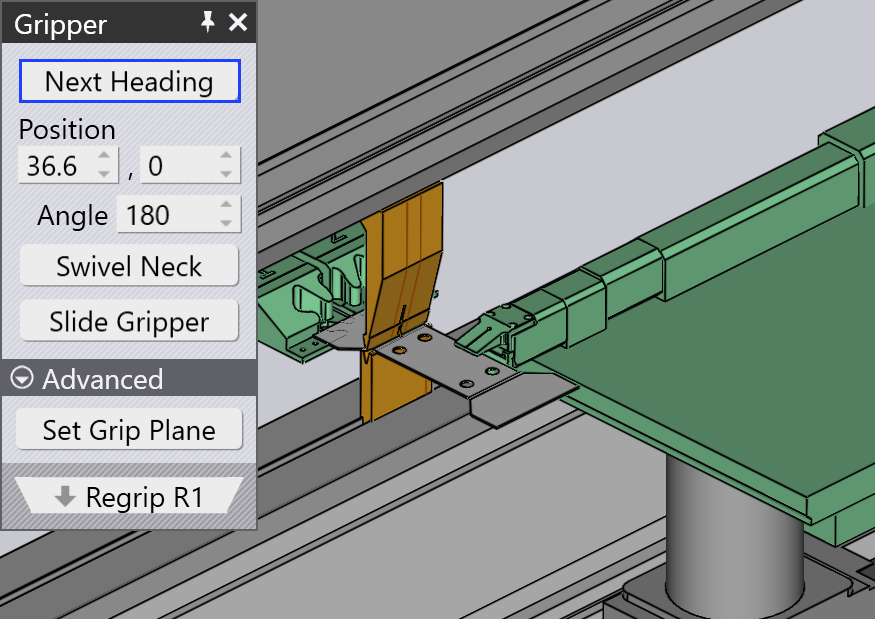
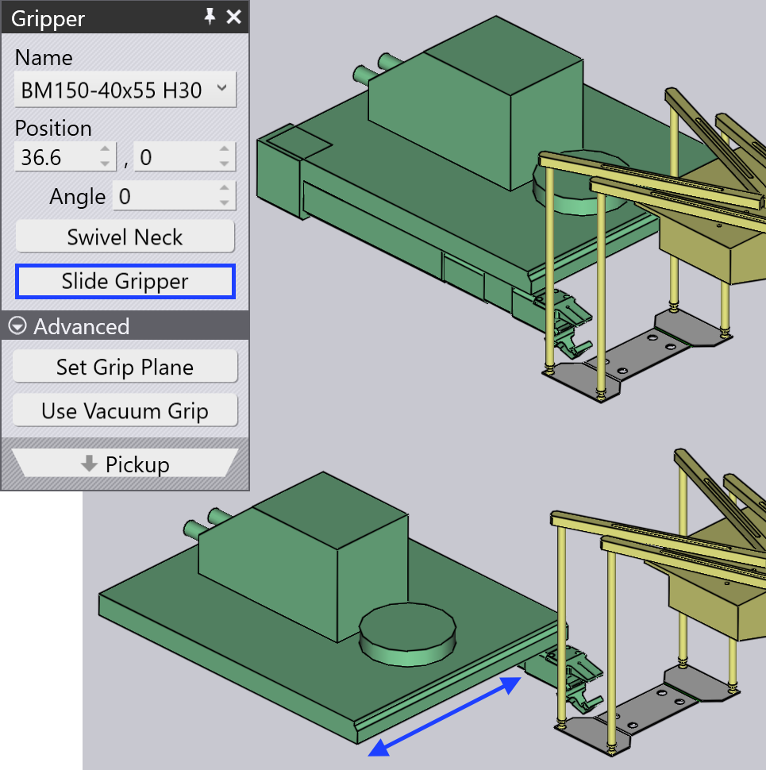
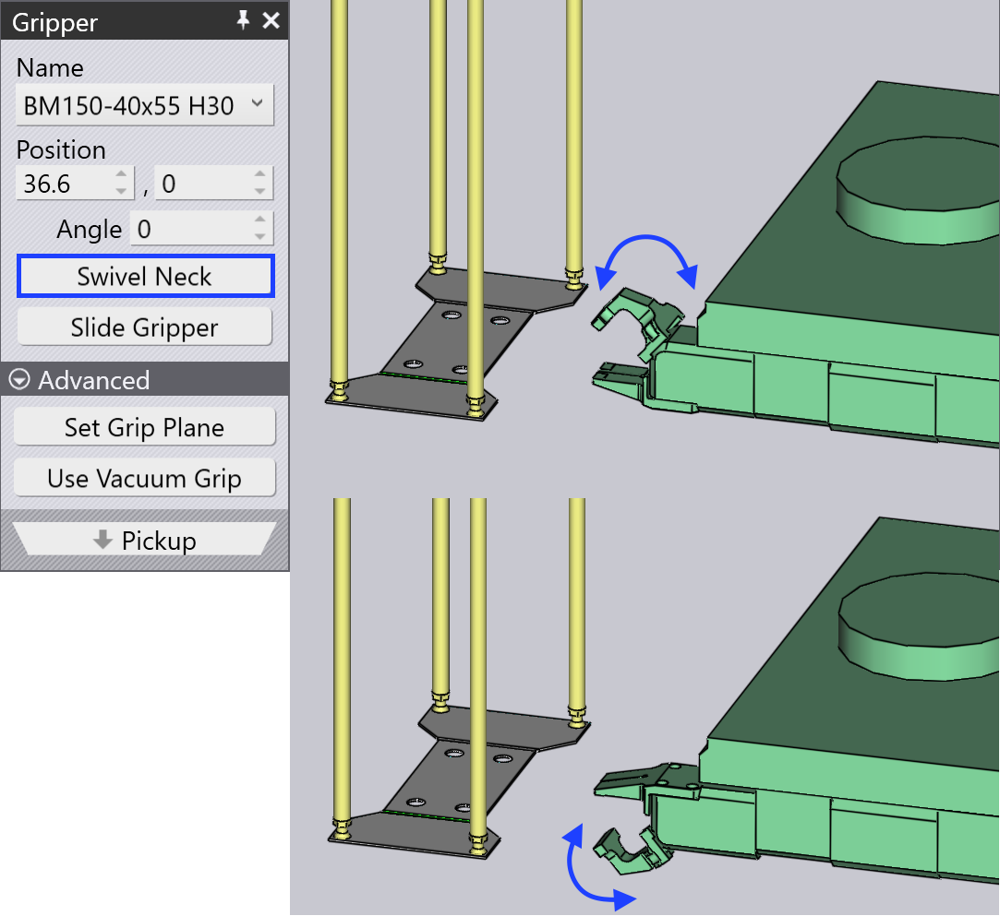

Εκ νέου σύλληψη με σιαγόνα
Όταν κάμπτετε μικρότερα εξαρτήματα, μπορεί να μην είναι δυνατό να κρατήσετε το αντικείμενο ασφαλώς με λαβίδα αναρρόφησης. Εδώ, χρησιμοποιείται μηχανική λαβίδα σιαγόνας. Με μια λαβίδα σιαγόνας, το TecZone μπορεί να προγραμματίσει μια λειτουργία εκ νέου σύλληψης.
Για να προσθέσετε μια λειτουργία εκ νέου σύλληψης χρησιμοποιώντας λαβίδα σιαγόνας:
-
Κάντε κλικ δύο φορές στον αριθμό κάμψης στον πλοηγό για να ανοίξετε τον πίνακα Bend, και στη συνέχεια κάντε κλικ στο κουμπί Add Regrip.

Αφού προστεθεί μια λειτουργία εκ νέου σύλληψης, μπορείτε να κάνετε κλικ στο κελί R1 στον πλοηγό κάμψης, ή να κάνετε κλικ δύο φορές στο τεμάχιο στη θέση εκ νέου σύλληψης.
Η χρήση της λαβίδας σιαγόνας είναι παρόμοια με το Σύλληψη από διανομέα.
-
Χρησιμοποιήστε το κουμπί Next Heading για να περιστρέψετε τη λαβίδα γύρω σε άλλη πλευρά του τεμαχίου (περιστρέφεται σε βήματα 90°).
-
Η επιλογή Swivel Neck βοηθά στην περιστροφή του λαιμού σιαγόνας με περιστροφή 180°.
-
Η επιλογή Slide Gripper βοηθά στην ολίσθηση της θέσης της λαβίδας ώστε να έχουμε τη σωστή διαδικασία κάμψης.
Καθώς κάνετε αυτές τις αλλαγές, το TecZone RoboBend θα υπολογίσει μια διαδρομή για τη λαβίδα να πάει γύρω από το τεμάχιο και να το πιάσει από την άλλη πλευρά. Όλες οι μετέπειτα καμπές θα έχουν επίσης την κατάσταση σύγκρουσής τους ενημερωμένη άμεσα, ώστε να μπορείτε να δείτε αν η νέα θέση εκ νέου σύλληψης που έχετε επιλέξει είναι αποδεκτή.
 